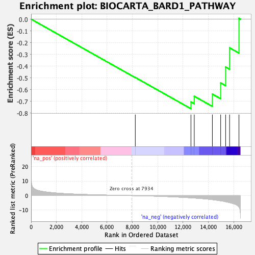
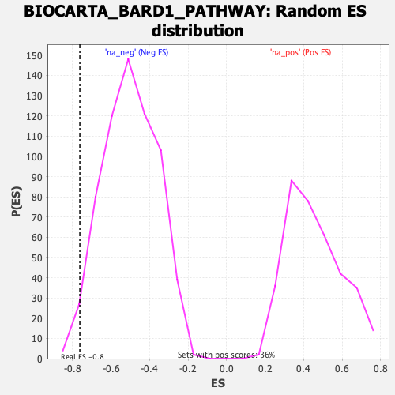

| | | Dataset | DE_genes2 |
| Phenotype | NoPhenotypeAvailable |
| Upregulated in class | na_neg |
| GeneSet | BIOCARTA_BARD1_PATHWAY |
| Enrichment Score (ES) | -0.76206976 |
| Normalized Enrichment Score (NES) | -1.5202366 |
| Nominal p-value | 0.00931677 |
| FDR q-value | 0.23283514 |
| FWER p-Value | 0.992 |
Table: GSEA Results Summary

Fig 1: Enrichment plot: BIOCARTA_BARD1_PATHWAY
Profile of the Running ES Score & Positions of GeneSet Members on the Rank Ordered List
| PROBE | GENE SYMBOL | GENE_TITLE | RANK IN GENE LIST | RANK METRIC SCORE | RUNNING ES | CORE ENRICHMENT | | 1 | FANCF | | | 8227 | -0.046 | -0.4962 | No |
| 2 | FANCG | | | 12622 | -1.544 | -0.7041 | Yes |
| 3 | FANCC | | | 12883 | -1.704 | -0.6559 | Yes |
| 4 | FANCE | | | 14314 | -2.795 | -0.6376 | Yes |
| 5 | FANCA | | | 14968 | -3.594 | -0.5423 | Yes |
| 6 | BARD1 | | | 15360 | -4.219 | -0.4077 | Yes |
| 7 | FANCD2 | | | 15673 | -4.860 | -0.2442 | Yes |
| 8 | BRCA1 | | | 16413 | -7.892 | 0.0071 | Yes |
Table: GSEA details [plain text format]

Fig 2: BIOCARTA_BARD1_PATHWAY: Random ES distribution
Gene set null distribution of ES for BIOCARTA_BARD1_PATHWAY